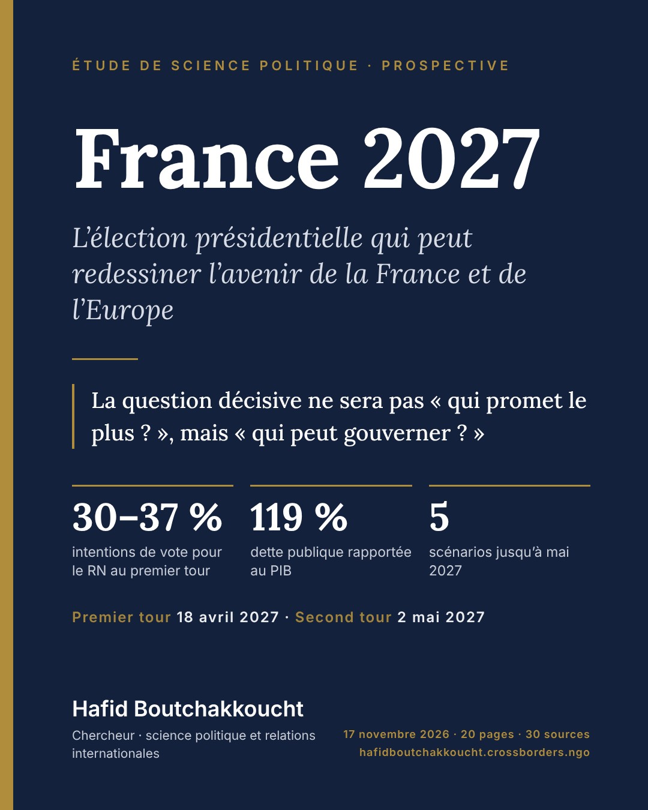

← Bibliothèque · Étude de science politique et de prospective · Science politique
France 2027
L’élection présidentielle qui peut redessiner l’avenir de la France et de l’Europe
Télécharger le PDF · 20 pagesLire en ligneCiter cette étude
- Auteur
- Hafid Boutchakkoucht
- Parution
- 17 novembre 2026
- Nature
- Étude de science politique et de prospective
- Langue
- Texte en français
- Approche
- Science politique comparée, sociologie électorale et prospective stratégique

Affiche de l’étude

L’étude en chiffres
- 30–37 %
- intentions de vote pour le Rassemblement national au premier tour, début novembre 2026
- 119 %
- dette publique rapportée au PIB, fin juin 2026
- 5
- scénarios à l’horizon de mai 2027
- 30
- sources numérotées
Chiffres tirés de l’étude.
Commentaire
Cette étude ne cherche pas à désigner un vainqueur. Elle déplace la question : de la compétition entre promesses vers la capacité à gouverner. Elle confronte les sondages, les données de l’Insee et les positions publiques des candidats aux grandes théories des systèmes de partis, de Duverger à Peter Mair.
Ce qu’il faut retenir
- Le Rassemblement national domine le premier tour, entre 30 et 37 % des intentions de vote, mais doit encore gagner près de vingt points pour l’emporter au second.
- La décision de la Cour de cassation sur l’éligibilité de Marine Le Pen est attendue au plus tard début avril 2027, quelques jours avant le premier tour.
- Le Parti socialiste a confié la candidature à Raphaël Glucksmann ; il reste une machine électorale, un négociateur du projet et un arbitre du second tour.
- L’Ukraine est la ligne de partage stratégique de la campagne : un changement de cap français pèserait sur la cohésion européenne et sur la relation transatlantique.
À qui s’adresse ce texte
Décideurs publics, diplomates, journalistes politiques, chercheurs et étudiants en science politique et en relations internationales.
Résumé
Cette étude analyse l’élection présidentielle française des 18 avril et 2 mai 2027 à partir d’une thèse : le scrutin ne se jouera pas sur la question « qui promet le plus », mais sur la question « qui peut gouverner ». Arrêtée au 17 novembre 2026, elle cartographie les forces en présence, montre que le Parti socialiste a choisi d’être un acteur autonome sans candidat propre, compare les orientations des programmes et mesure les contraintes que le prochain président ne choisira pas : une dette publique de 119 % du PIB, un Parlement fragmenté et une guerre aux portes de l’Union. Elle propose cinq scénarios, une matrice des variables décisives et une lecture des conséquences pour l’Europe, les États-Unis et le Maroc.
Abstract (English)
This study analyses the French presidential election of 18 April and 2 May 2027 around one thesis: the vote will not turn on who promises the most, but on who is able to govern. With data as of 17 November 2026, it maps the political forces, shows that the Socialist Party chose to remain an autonomous actor without its own candidate, compares the parties’ programmatic orientations and measures the constraints the next president will not choose: public debt at 119% of GDP, a fragmented Parliament and a war on the Union’s doorstep. It sets out five scenarios, a matrix of decisive variables and the implications for Europe, the United States and Morocco.
Citer cette étude
Boutchakkoucht, H. (2026). France 2027 : l’élection présidentielle qui peut redessiner l’avenir de la France et de l’Europe. Étude de science politique et de prospective, 17 novembre 2026. https://hafidboutchakkoucht.crossborders.ngo/publications/france-2027/
Lire en ligne
Si le lecteur ne s’affiche pas sur votre appareil, utilisez le bouton de téléchargement.
Télécharger le PDFÉcrire à l’auteur
Autre étudePartir, rester ou se faire entendre